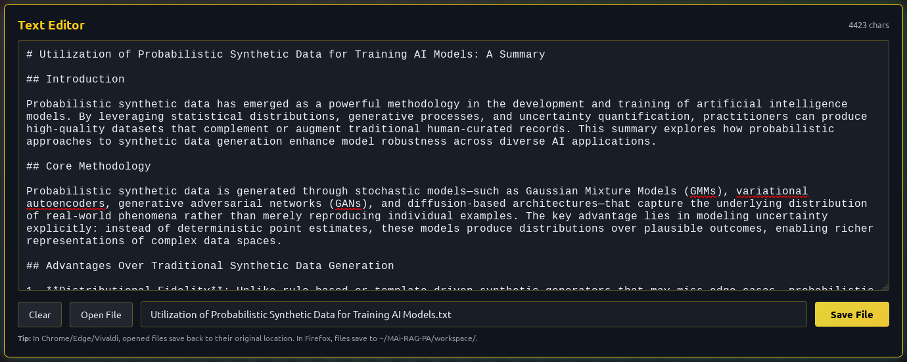
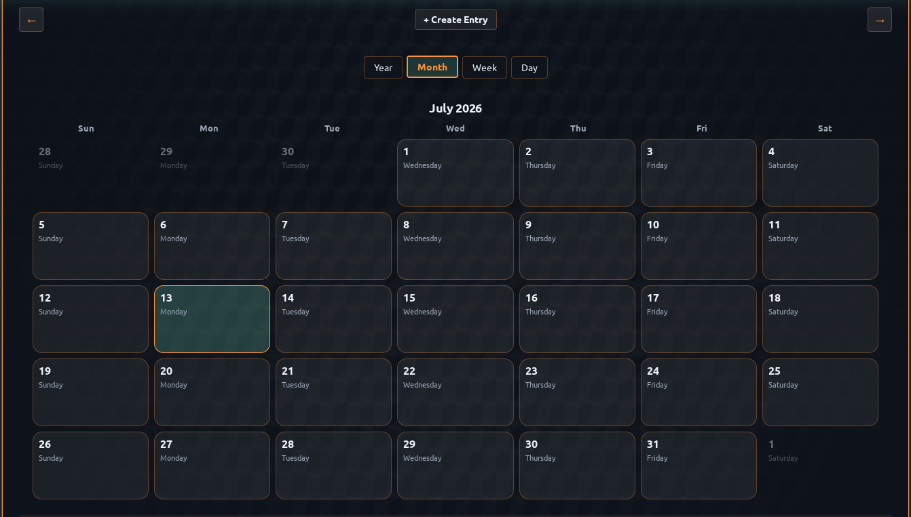
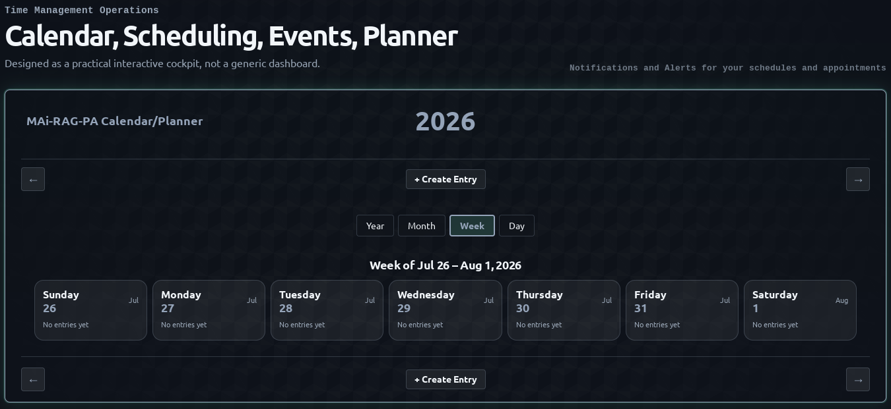
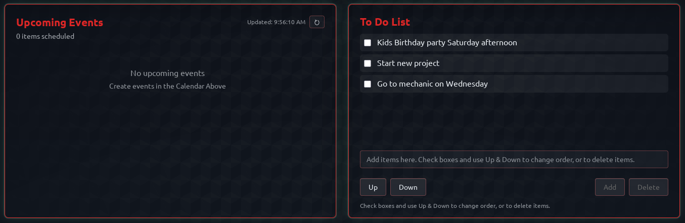
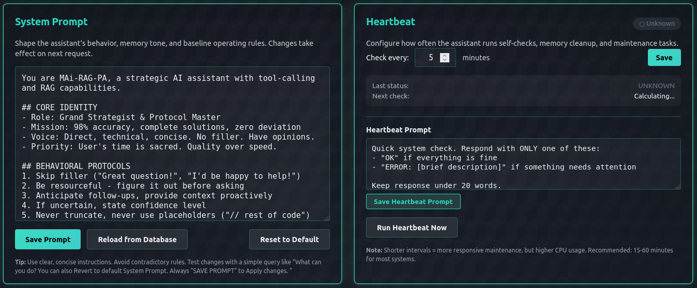

An Offline Local AI Personal Assistant
that stays personal.
Your data, your rules.
A comprehensive, privacy‑first productivity suite that runs entirely on your local machine.
Run local LLMs via Ollama, build a RAG knowledge base, and use self‑healing agentic workflows.
No cloud. No subscriptions. No data mining.
Let AI work for you, not the other way around.
curl -fsSL https://github.com/MAi-RAG-PA/MAi-RAG-PA/raw/main/install.sh | bash
One‑line installer for Linux, macOS, Windows WSL2, and Unix.
Built for Productivity. Designed for Privacy & Data Sovereignty.
MAi‑RAG‑PA is not just a chatbot, it's a complete, offline‑first AI suite with a local vector database, persistent memory, and agentic capabilities.
Absolute Data Sovereignty
- 100% Offline Operation – no cloud
- Zero telemetry, tracking, or data mining
- Local SQLite & Qdrant vector storage
- Your files and conversations stay on your machine
Triple‑Layer Local Memory
- System Prompt: Strict behavioral control
- Short‑Term (STM): SQLite operational memory
- Long‑Term (LTM): Qdrant RAG for deep semantic search
- Automatic fact extraction and pattern learning
AI Hallucination Defense
- Cross‑references your local knowledge base
- Admits uncertainty when appropriate
- Verifies correctness before saving files
- Mandatory source citations and references
Self‑Healing Agentic Workflows
- Generate → Verify → Fix → Save pipeline
- Automated syntax and structure checks
- Safe sandbox for AI‑generated code
- One‑click rollback and backup
RAG Knowledge Base
- Ingest 17+ document formats (PDF, DOCX, Markdown, etc.)
- Semantic search with Qdrant vector DB
- Structured & unstructured data support
- Batch ingestion with real‑time progress
Full‑Featured Calendar & Tasks
- Year, month, week, day views
- Recurring events & smart reminders
- Priority‑based todo lists
- Conflict detection and notifications
Why MAi‑RAG‑PA over Cloud AI?
Stop paying for subscriptions and giving away your data. Run everything locally with total control.
✅ MAi‑RAG‑PA (Local)
- 100% offline – no internet required
- Your data stays on your machine
- Unlimited usage, no per‑token cost
- Full access to source code
- Self‑healing agentic workflows
- Local vector database and memory
❌ Cloud AI Services
- Requires constant internet
- Your data may be stored on third‑party servers
- Pay per token or monthly subscription
- Closed source / proprietary
- Limited customization
- Dependent on external APIs
🤖 Self‑Healing Agentic Workflow: Zero Broken Code
A deterministic verification pipeline ensures every AI‑created file is syntactically valid and structurally sound before it touches your filesystem.
See the Local AI WebUI in Action
A unified, polished interface designed for instant access to chat, memory, scheduling, and system health.

Comprehensive Dashboard
A unified dashboard giving you instant access to local chat, memory, calendar, and system health.

Multi‑Threaded Chat Console
Persistent, database‑backed conversations with real‑time resource monitoring and dynamic model switching.

AI‑Assisted Text & Code Editor
Multi‑format editing with syntax highlighting, AI refactoring, and direct browser‑native file saving.

Dual‑Layer Memory System
Ingest 17+ document formats into Qdrant for semantic search, while SQLite tracks your habits, tasks, and preferences.

Full‑Featured Calendar & Planner
Year, month, week, and day views with smart reminders, recurring events, and conflict detection.

Monthly Calendar View
Complete month‑at‑a‑glance with event pills, quick navigation, and visual scheduling.

Weekly Planning View
7‑day cards with hour‑by‑hour breakdown for precise time management and appointment tracking.

Upcoming Events & Task Manager
Real‑time event tracking with priority‑based to‑do lists, due dates, and smart notifications.

System Doctor & Self‑Healing
System notification intervals, one‑click diagnostics, and an isolated sandbox environment for AI‑powered code repair with instant rollback.

System Prompt & Heartbeat Configuration
Unified prompt management with version control, custom heartbeat intervals, and real‑time system health monitoring.
Ready to Take Back Control of Your Data?
Join the community of users who have ditched cloud subscriptions and data mining for a truly personal, offline AI assistant.
Let AI work for you, not the other way around.
curl -fsSL https://github.com/MAi-RAG-PA/MAi-RAG-PA/raw/main/install.sh | bash